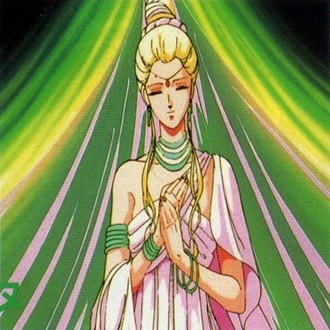

-
vshnu
Descrição
Vishnu é o deus responsável pela conservação e sustentação do mundo. Ele é um dos principais deuses dentro do hinduísmo. Por meio de dez avatares, que são formas corpóreas que o deus assume quando se manifesta na Terra, ele tem a missão de ajudar na preservação e evolução dos seres vivos.
-
Shurato - O Rei Shura

Descrição
Conta a história de dois amigos de infância, Shurato Hidaka e Gai Kuroki, que são levados a um cruel destino que mudará completamente suas vidas. No meio de uma luta entre eles num campeonato de artes marciais, os dois são teletransportados ao Tenkukai. Após despertar nesse mundo, Shurato descobre que é a reencarnação de um Deus Deva, o lado do bem que mantém o equilíbrio e a paz tanto no Tenkukai quanto no mundo dos humanos, e que seu amigo Gai se converteu em um ser maligno, que deseja inclusive matar seu próprio amigo. A partir daí, começa uma grande aventura e inúmeros desafios para impedir que o Tenkukai seja destruído pelas forças malignas, e Shurato, sem entender nada, é obrigado a se jogar no meio desta terrível batalha e a enfrentar seu querido amigo Gai.
-
Gai - O Rei Yasha

Descrição
Gai, o Rei Yasha, é inicialmente o principal antagonista da obra. Logo quando chega ao Mundo Celestial, é dominado pelo poder do Sohma Negro e passa a lutar contra Shurato. Na Terra, Gai era o melhor amigo e rival esportivo de Shurato, é descrito pelo próprio como uma pessoa importadora e responsável.
-
Hyuga - O Rei Celestial

Descrição
Hyouga, o Rei Celestial, é outro dos Oito Guardiões Lendários. Foi o primeiro a se tornar amigo de Shurato. Foi o assessor direto de Vishnu e foi testemunha da traição de Indra, pegando-o em flagrante. Meses após a queda de Indra, Hyouga se junta a Shurato e seus amigos na luta contra Shiva.
-
LEIGA - O Rei Kagura

Descrição
Leiga, o Rei Karla, é um dos Oito Guardiões Lendários do povo de Deva. É um personagem altamente vaidoso, esperto, muito brincalhão e foi o que mais desenvolveu amizade com Shurato. Primeiramente, alia-se a tropa de Gai, porém com certa desconfiança. Após confirmar suas suspeitas, junta-se ao grupo de Shurato. Mesmo tendo traços andróginos, Leiga adora dar em cima das garotas, principalmente Rakesh, provocando ciúmes em Shurato.
-
Ryouma - O Rei Dragão

Descrição
Ryouma, o Rei Ryuu, é fiel amigo de Hyuuga, é o mais forte entre os guardiões e o primeiro a se unir a Shurato e Hyuuga. Na Terra seu nome terrestre é Tanaka num OVA. Apesar de parecer ser o mais tímido é o primeiro a se casar. É determinado e sua arma é uma lança, na qual pode desferir golpes em alta velocidade. Na revolta de Indra, se sacrificou para derrotar Akalanata de Fudomyou, atingindo-o em seu ponto fraco. Logo volta à vida pelas mãos de Vishnu para combater as forças de Asura.